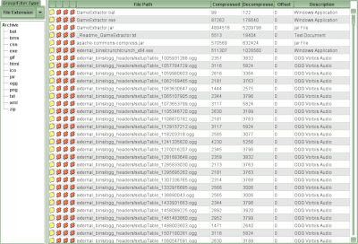
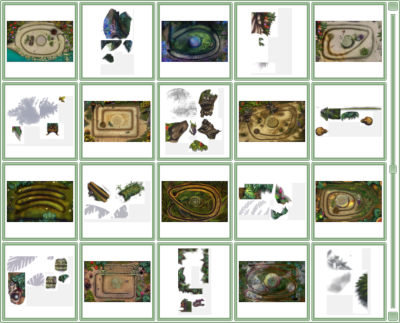
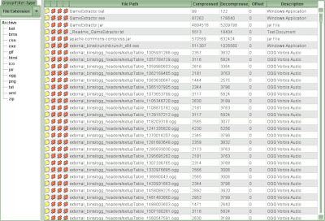
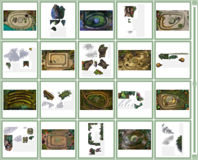

File List
Back to Index
The File List is the panel that displays all the files in an archive. The File List can be changed into different views, such as trees and tables, via the View menu.
If you right-click on one (or a number) of files in the File List, a menu will be displayed with some common options.

An example of a Table View File List

An example of a Group Table File List

An example of a Thumbnail View File List

An example of a Tree View File List
If you right-click on one (or a number) of files in the File List, a menu will be displayed with some common options.

